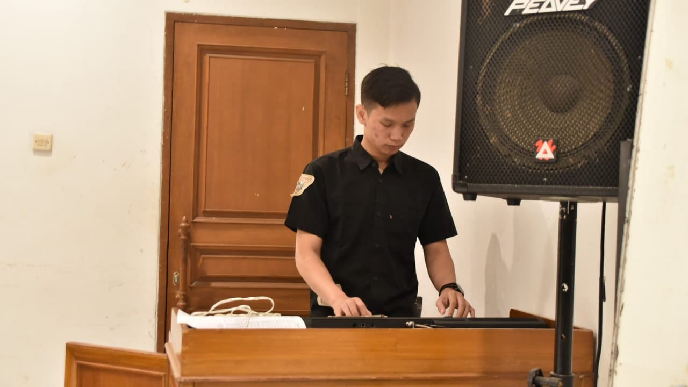

Hobi saya adalah bermain musik yaitu alat musik piano.Menurut saya piano itu adalah salah alat musik yang sangat romantis karna instrumentnya sangat menyentuh dihati saya memilih belajar belajar alat musik pino karna piano sangat asik untuk dimainkan. Pertama kali saya belajar piano adalah ketika saya berumur 15 tahun, saya melihat seorang yang bermain piano dan saya melihat orang tersebut sangat menikmati melodi indah yang dihasilkan. nah pada saat itulah saya tertarik untuk ingin belajar piano.
Awal mula belajar piano saya hanya lewat media sosial dan saya mempelajari banyak teori dan teknik dari media sosial tetapi saya merasa masih belum cukup untuk bisa main piano dan akhirnya saya mencari referensi digramedia untuk membeli buku piano dan dari situlah saya mulai bisa memainkan alat musk piano dan pada saat itu saya coba beranikan diri untuk bermain musik digreja tempat dimana saya beribadah dan disitu saya mendapat banyak masukan dan akhirnya saya memutuskan untuk belajar lebih lagi.

Pada saat umur saya 16 tahun saya mencoba ikut suatu komunitas musik dan untuk masuk ke komunitas itu harus dites terlebih dahulu dan akhirnya saya beranikan diri untuk mengikuti tes tersebut. setelah menunggu beberapa hari kemudian akhirnya saya dinyatakan lulus dan bisa masuk kedalam komunitas tersebut dan dikomunitas ini saya belajar banyak hal dan disinilah saya mulai mengasah skill bermusik saya dan setelah latihan kurang lebih 6 bulan saya disuruh untuk bermain piano disuatu acara yang ada digreja dan tanpa berfikir panjang saya langsung ambil kesempatan itu.

Setelah mengikuti komunitas selama 1 tahun saya mendapat banyak sekali pelajaran dan disitu mulai banyak orang yang mengajak saya untuk bermain satu band dengan mereka dan sayapun menerima ajakan tersebut untuk bermain band dengan mereka dan setelah selesai dari sini mulailah saya mendapat banyak teman dan lebih mengenal banyak orang dan sekaligus terus menurus mengasah skill saya dalam bermusik

Setelah saya manggung dimana-mana dan banyak orang yang request untuk belajar piano dengan saya dan akhirnya saya coba untuk sahring dengan ilmu yang saya punya dan setelah banyak murid yang saya dapat, saya mendapat tawaran kerja dari tempat les musik yang bernama chord dan disitulah saya menjadi guru piano dan mempunyai banyak murid.